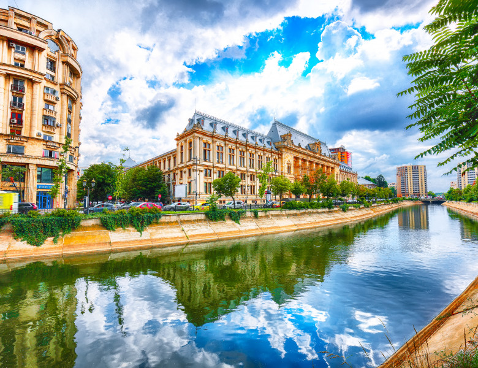

Bucureștiul se află în sud-estul României, între Ploiești, la nord și Giurgiu, la sud. Orașul se află în Câmpia Vlăsiei, care face parte din Câmpia Română. La est se află Bărăganul, în partea de vest Câmpia Găvanu-Burdea, iar la sud este delimitat de Câmpia Burnazului. Istoric, se consideră că Bucureștiul a fost construit pe șapte dealuri, asemenea celor șapte coline ale Romei. Cele șapte dealuri ale Bucureștiului sunt: Dealul Mitropoliei, Dealul Spirii, Dealul Cotrocenilor, Dealul Arsenalului, Dealul Filaretului, Dealul Văcărești și Colina Radu Vodă. Cu excepția Dealului Mitropoliei, restul pantelor din București sunt rezultatul eroziunii fluviale a celor două cursuri principale de apă care îl străbat.
Bucureștiul are o suprafață de 228 km², ceea ce înseamnă că orașul ocupă 0,08% din întreg teritoriul României.[38] Altitudinea variază de la 57,1 m în zona podului de la Cățelu, în partea de sud-est a orașului, până la aproximativ 93 m în Bucureștii Noi - Mogoșoaia.
Fântânile din Piața Unirii
Raportat la coordonatele geografice fixe, orașul București se regăsește la intersecția paralelei de 44º24′49″ (ca Belgrad, Geneva, Bordeaux și Minneapolis) cu meridianul de 26º5′48″, meridian ce străbate, de asemenea, Helsinki și Johannesburg. Orașul are o formă aproximativ rotundă, cu centrul situat la intersecția axelor imaginare nord/sud și est/vest din Piața Universității. Monumentul pentru kilometrul zero al României este plasat chiar la sud de Piața Universității, în fața Bisericii Sf. Gheorghe Nou din Piața Sf. Gheorghe. Raza Bucureștiului, din Piața Universității până la periferie în toate direcțiile, variază de la 10 la 12 km.
Până de curând, regiunile din jurul Bucureștiului erau predominant rurale, dar după 1989 au început să se construiască suburbii în jurul orașului. Este de așteptat ca dezvoltarea urbană să continue, de vreme ce zona metropolitană București va deveni operațională până în 2020 și va incorpora alte comune și orașe din județul Ilfov și județele învecinate.
